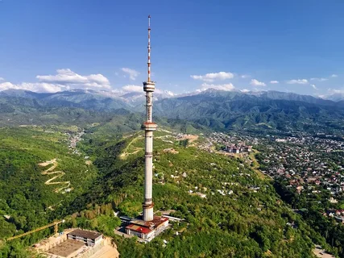
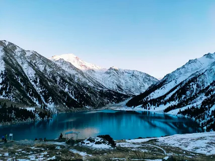
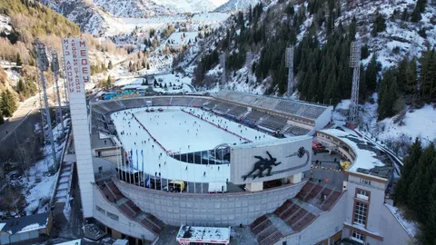
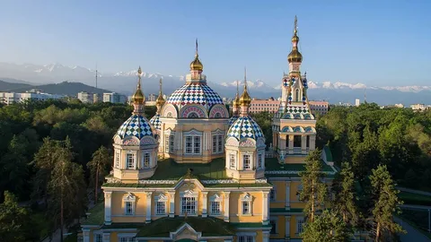
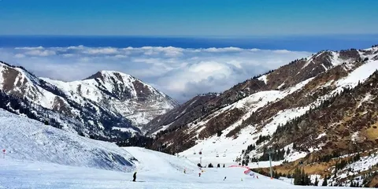
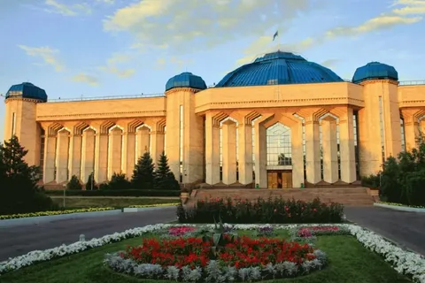

Алматы
Алматы — крупнейший город Казахстана, расположенный у подножия Заилийского Алатау. До 1997 года он был столицей страны, а сегодня является её культурным центром.
Население: около 2 миллионов человек
Основан: 1854 год (как укрепление Верный)
История
Алматы имеет богатую историю, начиная с древнего поселения Алмату, существовавшего на Великом шёлковом пути. Город пережил периоды бурного роста, разрушительных землетрясений и масштабной реконструкции. В советское время Алматы стал важным промышленным и научным центром, а после обретения независимости Казахстана сохранил статус ведущего мегаполиса страны.
Достопримечательности
-

Кок-Тобе — живописная гора с панорамным видом на город
-

Большое Алматинское озеро — одно из самых красивых мест в окрестностях
-

Медеу — знаменитый высокогорный каток, где ставились мировые рекорды
-

Парк имени 28 гвардейцев-панфиловцев и Вознесенский кафедральный собор
-

Шымбулак — популярный горнолыжный курорт Алматы
-

Центральный государственный музей — крупнейший музей Казахстана
Культура
Алматы известен как культурная столица Казахстана. Здесь проходят международные фестивали, выставки и концерты. В городе много театров, музеев и галерей.
Интересные факты
- В Алматы растёт яблоня Сиверса, предок всех современных сортов яблок
- Город считается «сердцем» казахстанского IT и креативных индустрий
- Алматы — один из самых зелёных мегаполисов СНГ